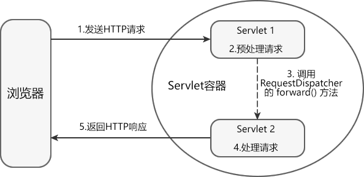
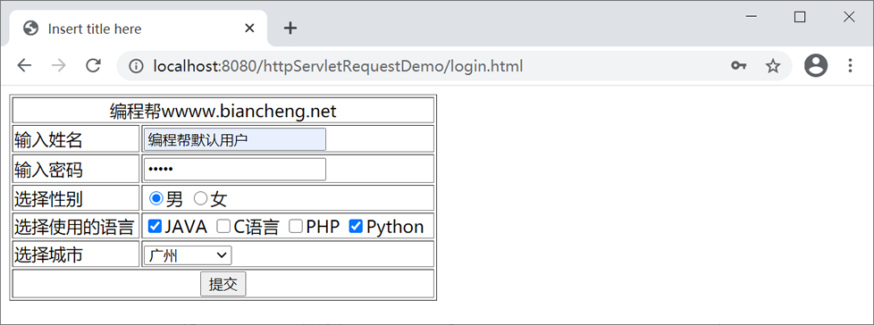
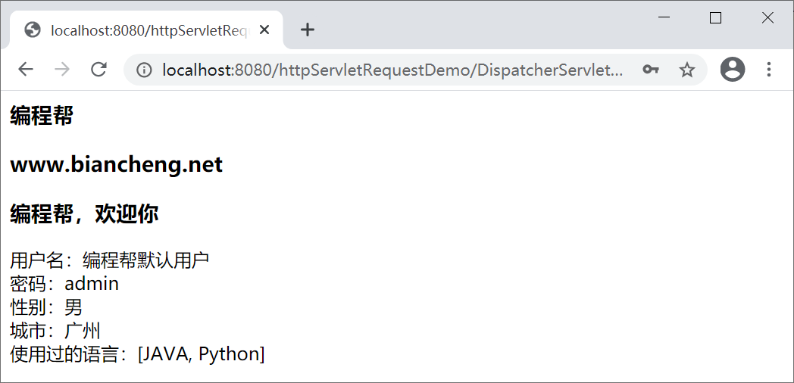

Servlet请求转发
Web 应用在处理客户端的请求时，经常需要多个 Web 资源共同协作才能生成响应结果。但由于 Serlvet 对象无法直接调用其他 Servlet 的 service() 方法，所以 Servlet 规范提供了 2 种解决方案：
下面我们主要对请求转发进行介绍。
Servlet 可以通过 2 种方式获得 RequestDispatcher 对象：
在 ServletRequest 接口中定义了一系列操作属性的方法，如下表。
Context 域对象和 request 域对象对比，具有以下 4 点差异：
request 域对象的生命周期从客户端向容器发送请求开始，到对这次请求做出响应后结束。
request 域对象只对本次请求涉及的 Servlet 有效。
由于 Servlet 能处理多个请求，因此 Web 应用中的每个 Servlet 实例都可以有多个 request 域对象。
Request 域对象需要与请求转发配合使用才能实现动态资源之间的数据共享。
在 httpServletRequestDemo 的 net.biancheng.www 包中，创建一个名为 DispatcherServlet 的类，代码如下。
然后，再创建一个名称为 DoServlet 的类，代码如下。
在 WebContent 根目录下，创建 login.html，代码如下。
启动 Tomcat 服务器，在地址栏输入“http://localhost:8080/httpServletRequestDemo/login.html”，访问 login.html，结果如下图。
填写表单信息，点击提交，结果如下图。
- 请求转发
- 请求包含（了解即可）
下面我们主要对请求转发进行介绍。
请求转发
请求转发属于服务器行为。容器接收请求后，Servlet 会先对请求做一些预处理，然后将请求传递给其他 Web 资源，来完成包括生成响应在内的后续工作。RequestDispatcher 接口
javax.servlet 包中定义了一个 RequestDispatcher 接口，RequestDispatcher 对象由 Servlet 容器创建，用于封装由路径所标识的 Web 资源。利用 RequestDispatcher 对象可以把请求转发给其他的 Web 资源。Servlet 可以通过 2 种方式获得 RequestDispatcher 对象：
- 调用 ServletContext 的 getRequestDispatcher(String path) 方法，参数 path 指定目标资源的路径，必须为绝对路径；
- 调用 ServletRequest 的 getRequestDispatcher(String path) 方法，参数 path 指定目标资源的路径，可以为绝对路径，也可以为相对路径。
RequestDispatcher 接口中提供了以下方法。绝对路径是指以符号“/”开头的路径，“/”表示当前 Web 应用的根目录。相对路径是指相对当前 Web 资源的路径，不以符号“/”开头。
| 返回值类型 | 方法 | 功能描述 |
|---|---|---|
| void | forward(ServletRequest request,ServletResponse response) | 用于将请求转发给另一个 Web 资源。该方法必须在响应提交给客户端之前被调用，否则将抛出 IllegalStateException 异常 |
| void | include(ServletRequest request,ServletResponse response) | 用于将其他的资源作为当前响应内容包含进来 |
请求转发的工作原理
在 Servlet 中，通常使用 forward() 方法将当前请求转发给其他的 Web 资源进行处理。请求转发的工作原理如下图所示。

请求转发的特点
请求转发具有以下特点：- 请求转发不支持跨域访问，只能跳转到当前应用中的资源。
- 请求转发之后，浏览器地址栏中的 URL 不会发生变化，因此浏览器不知道在服务器内部发生了转发行为，更无法得知转发的次数。
- 参与请求转发的 Web 资源之间共享同一 request 对象和 response 对象。
- 由于 forward() 方法会先清空 response 缓冲区，因此只有转发到最后一个 Web 资源时，生成的响应才会被发送到客户端。
request 域对象
request 是 Servlet 的三大域对象之一，它需要与请求转发配合使用，才可以实现动态资源间的数据传递。在 ServletRequest 接口中定义了一系列操作属性的方法，如下表。
| 返回值类型 | 方法 | 描述 |
|---|---|---|
| void | setAttribute(String name, Object o) | 将 Java 对象与属性名绑定，并将它作为一个属性存放到 request 对象中。参数 name 为属性名，参数 object 为属性值。 |
| Object | getAttribute(String name) | 根据属性名 name，返回 request 中对应的属性值。 |
| void | removeAttribute(String name) | 用于移除 request 对象中指定的属性。 |
| Enumeration | getAttributeNames() | 用于返回 request 对象中的所有属性名的枚举集合。 |
Context 域对象和 request 域对象对比，具有以下 4 点差异：
1） 生命周期不同
Context 域对象的生命周期从容器启动开始，到容器关闭或者 Web 应用被移除时结束；request 域对象的生命周期从客户端向容器发送请求开始，到对这次请求做出响应后结束。
2） 作用域不同
Context 域对象对整个 Web 应用内的所有Servlet都有效；request 域对象只对本次请求涉及的 Servlet 有效。
3） Web 应用中数量不同
整个 Web 应用中只有一个 Context 域对象；由于 Servlet 能处理多个请求，因此 Web 应用中的每个 Servlet 实例都可以有多个 request 域对象。
4） 实现数据共享的方式不同
Context 域对象可以独立完成动态资源之间的数据共享；Request 域对象需要与请求转发配合使用才能实现动态资源之间的数据共享。
示例
下面我们通过一个案例加深大家对转发和 request 域对象的理解。在 httpServletRequestDemo 的 net.biancheng.www 包中，创建一个名为 DispatcherServlet 的类，代码如下。
package net.biancheng.www;
import java.io.IOException;
import java.io.PrintWriter;
import javax.servlet.ServletException;
import javax.servlet.annotation.WebServlet;
import javax.servlet.http.HttpServlet;
import javax.servlet.http.HttpServletRequest;
import javax.servlet.http.HttpServletResponse;
/**
*
* @author 编程帮 www.biancheng.net
*请求转发
*/
@WebServlet("/DispatcherServlet")
public class DispatcherServlet extends HttpServlet {
private static final long serialVersionUID = 1L;
protected void doGet(HttpServletRequest request, HttpServletResponse response)
throws ServletException, IOException {
// 设置向页面输出内容格式
response.setContentType("text/html;charset=UTF-8");
PrintWriter writer = response.getWriter();
// 尝试在请求转发前向response缓冲区写入内容，最后在页面查看是否展示
writer.write("<h1>这是转发前在响应信息内的内容！</h1>");
// 向reuqest域对象中添加属性，传递给下一个web资源
request.setAttribute("webName", "C语言中文网");
request.setAttribute("url", "www.biancheng.net");
request.setAttribute("welcome", "C语言中文网，欢迎你");
// 转发
request.getRequestDispatcher("/DoServlet").forward(request, response);
}
protected void doPost(HttpServletRequest request, HttpServletResponse response)
throws ServletException, IOException {
doGet(request, response);
}
}
然后，再创建一个名称为 DoServlet 的类，代码如下。
package net.biancheng.www;
import java.io.IOException;
import java.io.PrintWriter;
import java.util.Arrays;
import javax.servlet.ServletException;
import javax.servlet.annotation.WebServlet;
import javax.servlet.http.HttpServlet;
import javax.servlet.http.HttpServletRequest;
import javax.servlet.http.HttpServletResponse;
/**
*
* @author 编程帮 www.biancheng.net
* 请求转发
*
*/
@WebServlet("/DoServlet")
public class DoServlet extends HttpServlet {
private static final long serialVersionUID = 1L;
protected void doGet(HttpServletRequest request, HttpServletResponse response)
throws ServletException, IOException {
// 设置向页面输出内容格式
response.setContentType("text/html;charset=UTF-8");
PrintWriter writer = response.getWriter();
String webName = (String) request.getAttribute("webName");
String url = (String) request.getAttribute("url");
String welcome = (String) request.getAttribute("welcome");
if (webName != null) {
writer.write("<h3>" + webName + "</h3>");
}
if (url != null) {
writer.write("<h3>" + url + "</h3>");
}
if (welcome != null) {
writer.write("<h3>" + welcome + "</h3>");
}
String username = request.getParameter("username");
// 获取密码
String password = request.getParameter("password");
// 获取性别
String sex = request.getParameter("sex");
// 获取城市
String city = request.getParameter("city");
// 获取使用语言返回是String数组
String[] languages = request.getParameterValues("language");
writer.write("用户名：" + username + "<br/>" + "密码：" + password + "<br/>" + "性别：" + sex + "<br/>" + "城市：" + city
+ "<br/>" + "使用过的语言：" + Arrays.toString(languages) + "<br/>"
);
}
protected void doPost(HttpServletRequest request, HttpServletResponse response)
throws ServletException, IOException {
doGet(request, response);
}
}
在 WebContent 根目录下，创建 login.html，代码如下。
<!DOCTYPE html>
<html>
<head>
<meta charset="UTF-8">
<title>Insert title here</title>
</head>
<body>
<form action="/httpServletRequestDemo/DispatcherServlet" method="GET">
<table border="1" width="50%">
<tr>
<td colspan="2" align="center">编程帮wwww.biancheng.net</td>
</tr>
<tr>
<td>输入姓名</td>
<td><input type="text" name="username" /></td>
</tr>
<tr>
<td>输入密码</td>
<td><input type="password" name="password" /></td>
</tr>
<tr>
<td>选择性别</td>
<td><input type="radio" name="sex" value="男" />男 <input
type="radio" name="sex" value="女" />女</td>
</tr>
<tr>
<td>选择使用的语言</td>
<td><input type="checkbox" name="language" value="JAVA" />JAVA
<input type="checkbox" name="language" value="C语言" />C语言 <input
type="checkbox" name="language" value="PHP" />PHP <input
type="checkbox" name="language" value="Python" />Python</td>
</tr>
<tr>
<td>选择城市</td>
<td><select name="city">
<option value="none">--请选择--</option>
<option value="北京">北京</option>
<option value="北京">上海</option>
<option value="广州">广州</option>
</select></td>
</tr>
<tr>
<td colspan="2" align="center"><input type="submit" value="提交" />
</td>
</tr>
</table>
</form>
</body>
</html>
启动 Tomcat 服务器，在地址栏输入“http://localhost:8080/httpServletRequestDemo/login.html”，访问 login.html，结果如下图。

填写表单信息，点击提交，结果如下图。

关注公众号「站长严长生」，在手机上阅读所有教程，随时随地都能学习。内含一款搜索神器，免费下载全网书籍和视频。

微信扫码关注公众号